Program Implementation
From design to working software · 18 slides · 24 practice questions
Read each original slide, then use the explanation and example to make the idea easier to remember. Review the cheat sheet at the end, then take the quiz.
Open or download the complete lesson PDF
Jump to a slide
This lesson follows how a software idea becomes a usable program, from writing code through testing and documentation.
Example: For example, a team turns a design for a study planner into an app people can use.
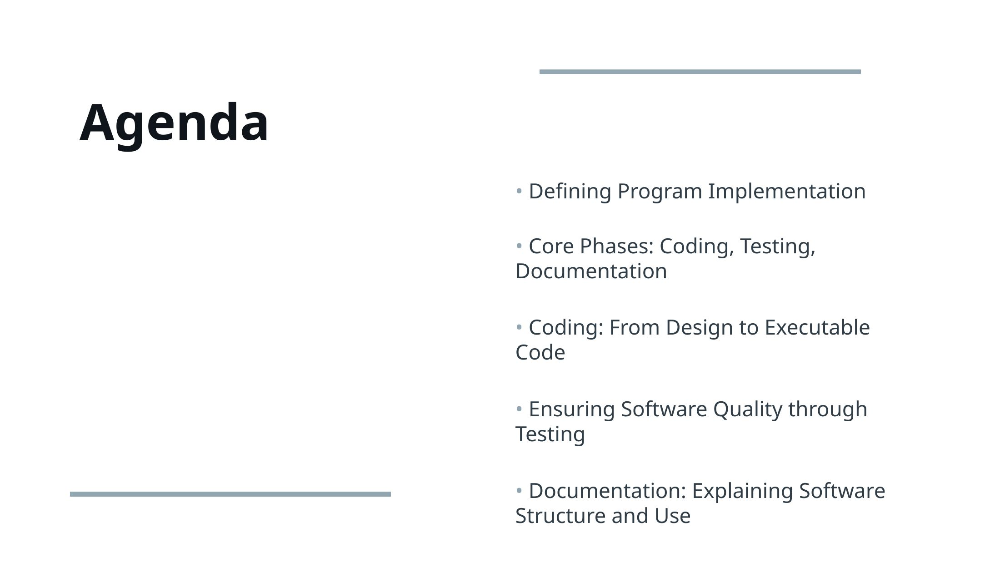
The agenda previews the main stops: what implementation means, how coding/testing/documentation fit together, and how each supports quality.
Example: Use it as a map: first build the software, then check it, then explain how it works.
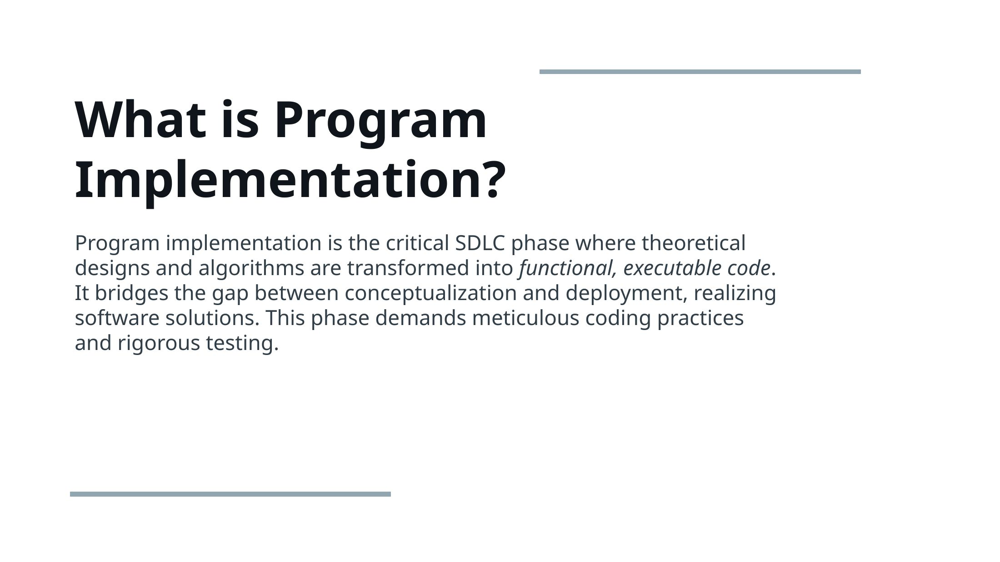
Program implementation is the SDLC stage that turns designs and algorithms into working, executable software. Careful coding and testing help make the result ready for use.
Example: A recipe-like algorithm for sorting names becomes a real function that runs in an application.
- Program implementation: The SDLC phase that transforms theoretical designs and algorithms into functional, executable code.
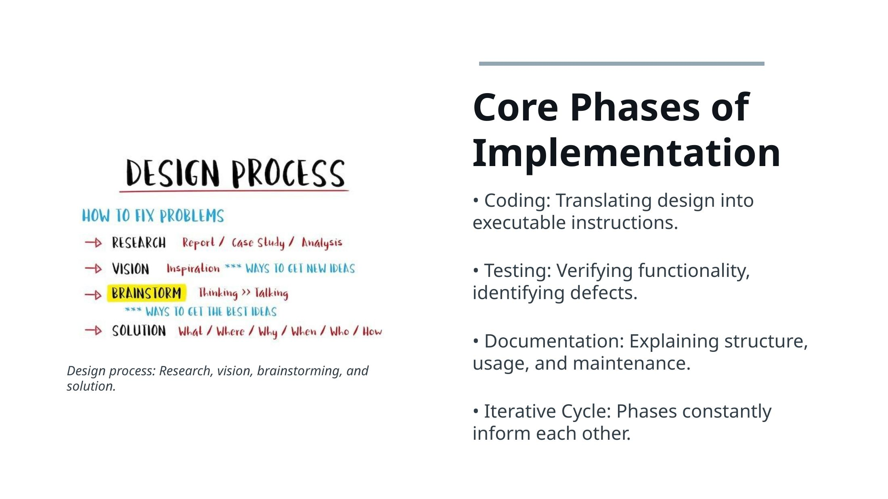
Implementation has three connected activities: coding builds the solution, testing checks it, and documentation explains it. The work is iterative, so what you learn in one activity can change another.
Example: A failed test may send a developer back to adjust the code and update its explanation.
- Iterative implementation: Coding, testing, and documentation repeatedly informing one another rather than operating as isolated tasks.
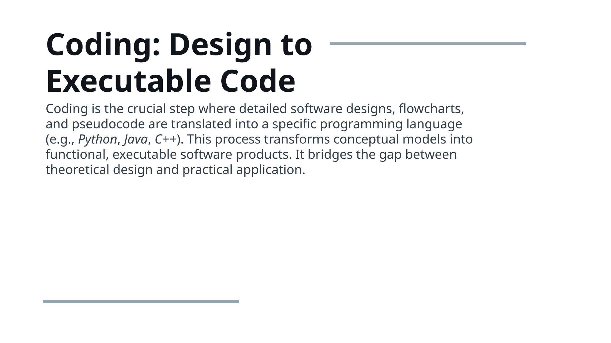
Coding translates designs, flowcharts, or pseudocode into a programming language so a computer can run the intended solution.
Example: A flowchart for adding two numbers can become a short Python or Java function.
- Coding: Translating software designs, flowcharts, and pseudocode into instructions in a programming language.
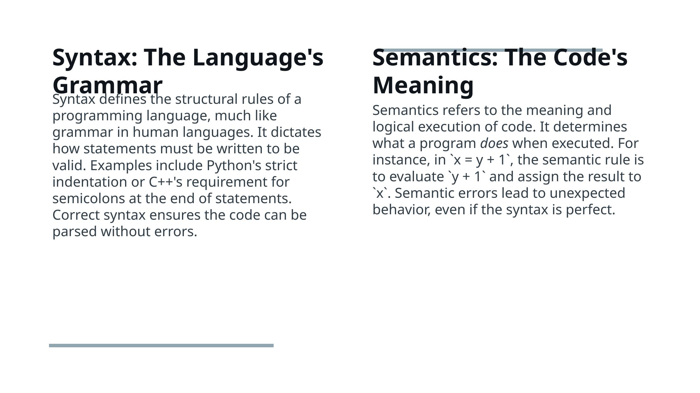
Syntax is the language’s writing rules; semantics is what valid code means when it runs. Code can follow the grammar and still do the wrong thing.
Example: Missing a required semicolon is a syntax problem; adding 1 when the program should subtract 1 is a logic/meaning problem.
- Syntax: The structural rules or grammar that determine whether programming statements are valid.
- Semantics: The meaning and logical execution of code, including what its operations do.
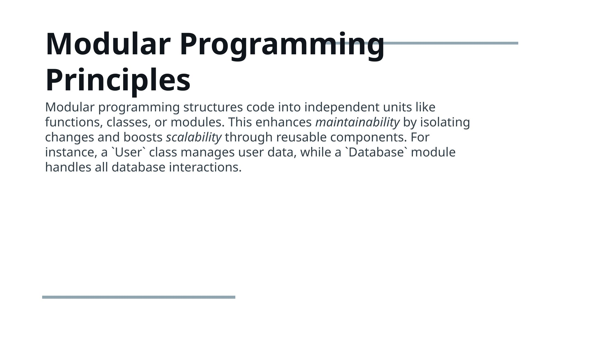
Modular programming divides a program into focused units such as functions, classes, or modules. Smaller responsibilities are easier to change and reuse.
Example: Keep user-profile logic in one module and database access in another.
- Modular programming: Organizing code into independent functions, classes, or modules to support reuse, maintainability, and scalability.
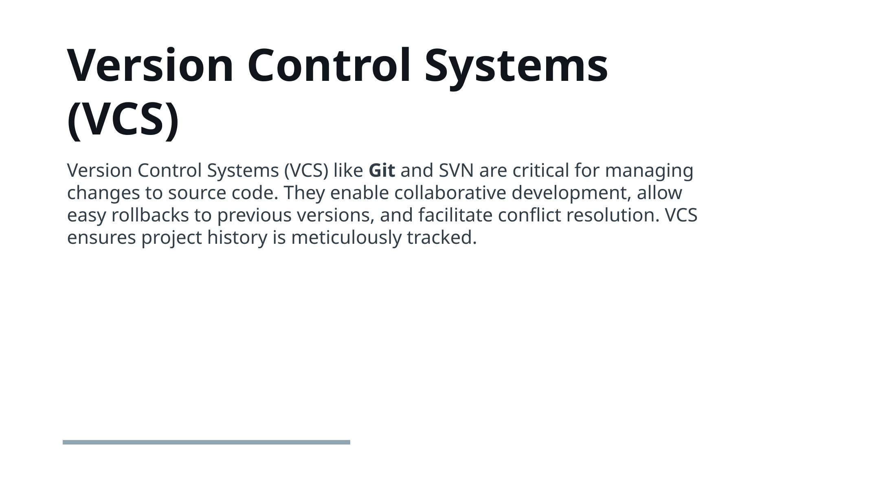
Version control records changes over time and helps people work together. It supports reviewing history, restoring earlier code, and resolving competing edits.
Example: If a new change breaks a feature, Git history can help identify and restore the earlier working version.
- Version control systems: Tools such as Git and SVN that track source changes and support collaboration, rollback, and conflict resolution.
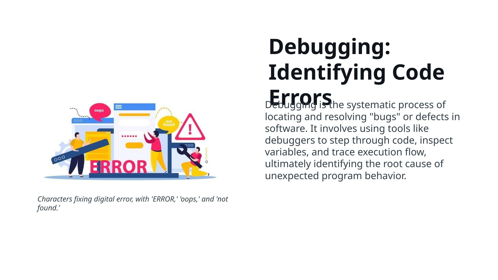
Debugging means tracing unexpected behavior to its cause and correcting it. Developers can step through execution and inspect values to see where things go wrong.
Example: If a total is unexpectedly zero, inspect the variable after each calculation to find where it changed.
- Debugging: Systematically locating and resolving software defects, using execution traces, variable inspection, or debuggers.
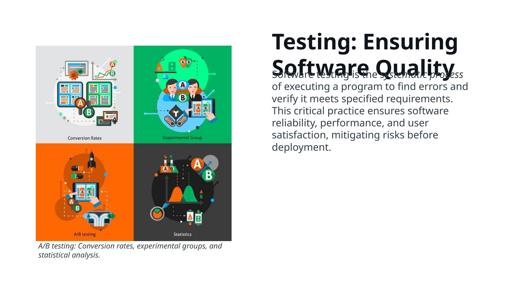
Testing runs software in a planned way to find defects and check whether requirements are met. It reduces the chance that problems reach users.
Example: Try valid and invalid inputs for a registration form and check that each produces the expected result.
- Software testing: Executing software systematically to find errors and verify that it meets specified requirements.
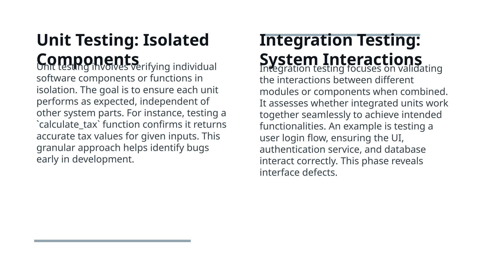
Unit tests check one small part on its own; integration tests check whether connected parts work together. The first catches local errors, while the second catches interface problems.
Example: Test a tax-calculation function by itself, then test a login flow across its screen, authentication service, and database.
- Unit testing: Verifying individual components or functions in isolation, such as a calculate_tax function.
- Integration testing: Validating interfaces and interactions between combined modules, such as a login UI, authentication service, and database.
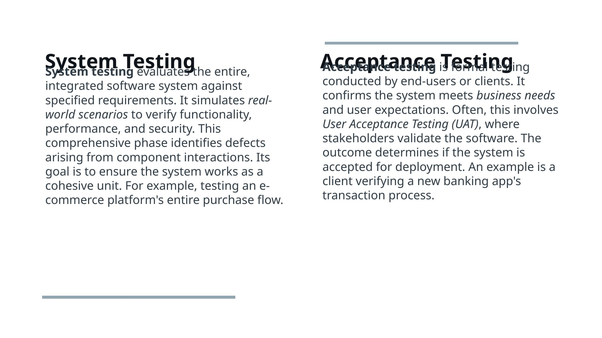
System testing checks the complete application against requirements. Acceptance testing asks users or clients whether it meets their real business needs and is ready to accept.
Example: Run a full online purchase from browsing to confirmation; then have a client confirm the flow fits their needs.
- System testing: Evaluating the whole integrated system against requirements through realistic scenarios.
- Acceptance testing / UAT: End-users or clients validating that software meets business needs and is acceptable for deployment.
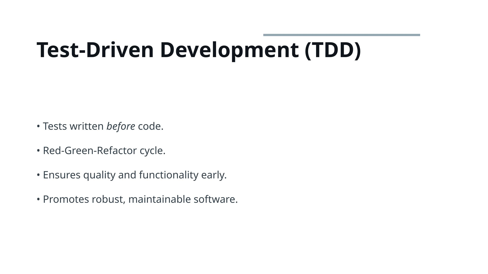
In test-driven development, write a test before the production code. Red means the test fails, green means the code passes it, and refactor means improve the code while keeping tests passing.
Example: Write a test that expects an empty cart total to be zero, see it fail, implement the calculation, then clean up the code.
- Test-driven development: Writing tests before production code and following the Red-Green-Refactor cycle.
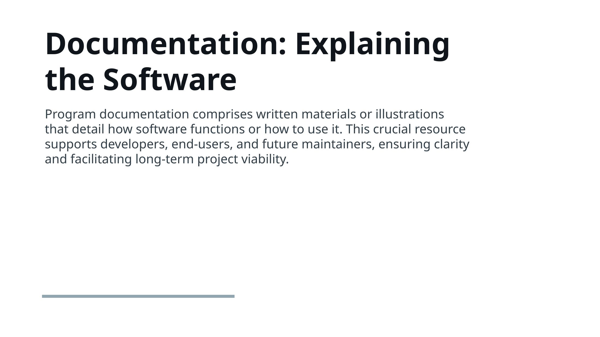
Documentation is written or visual information about how software works or how to use it. It helps developers, users, and future maintainers understand the product.
Example: A diagram can show how application parts connect; a quick-start guide can show a user how to begin.
- Program documentation: Written material or illustrations explaining software operation or use for developers, users, and maintainers.
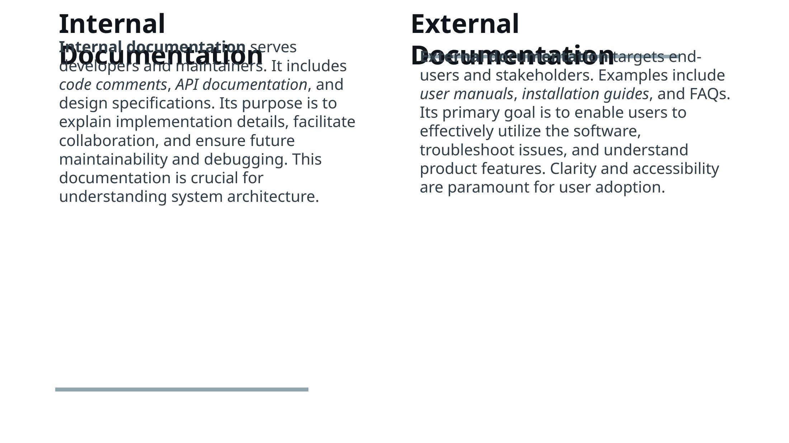
Internal documentation helps developers understand design and implementation; external documentation helps users and stakeholders use the product. Each serves a different audience.
Example: An API reference is for developers; an installation guide is for someone setting up the software.
- Internal documentation: Developer-facing material such as code comments, API documentation, and design specifications.
- External documentation: User-facing material such as user manuals, installation guides, and FAQs.
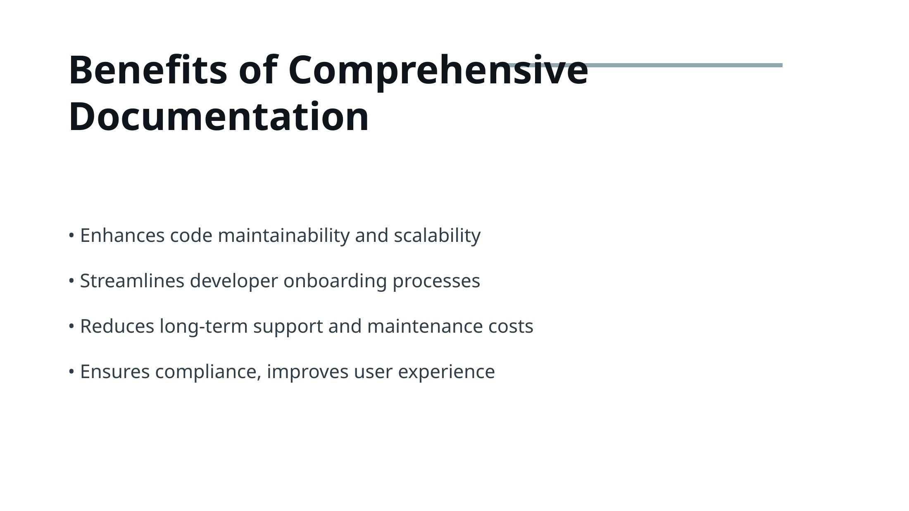
Good documentation makes software easier to maintain, helps new team members get started, can reduce support costs, and improves user experience and compliance.
Example: A clear setup guide can let a new developer run the project without repeatedly asking teammates for steps.
- Documentation benefits: Better maintainability, easier onboarding, lower support costs, and improved user experience.
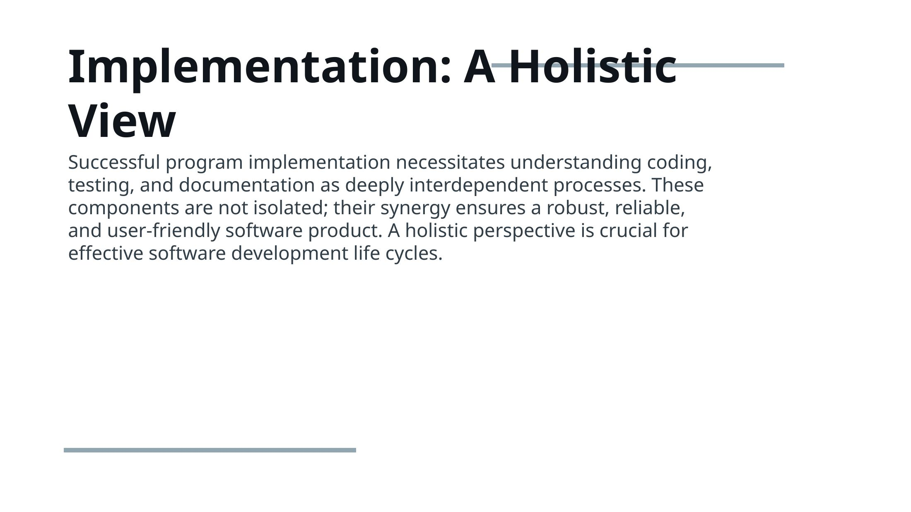
Implementation works best when coding, testing, and documentation support one another. Together they help produce software that works reliably and can be understood and maintained.
Example: A feature is coded, tested against expected behavior, and documented so the next developer can extend it.
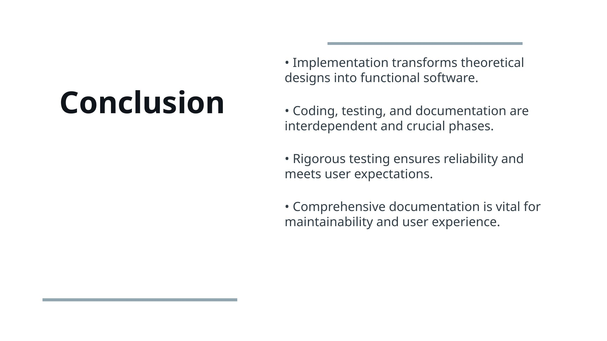
The conclusion reinforces the lesson’s main point: implementation turns designs into software, and coding, testing, and documentation all contribute to quality and long-term usability.
Example: When reviewing a feature, ask: does it work, has it been checked, and can someone understand or use it?
Lesson cheat sheet
Use this as a quick review before your quiz.
| Term or idea | Remember it this way |
|---|---|
| Program implementation | Turns designs and algorithms into executable software. |
| Coding | Translates a design into instructions in a programming language. |
| Syntax vs. semantics | Syntax is code structure; semantics is what the code means when run. |
| Modular programming | Organizes code into focused, reusable units. |
| Version control | Tracks code history and supports collaboration and rollback. |
| Debugging | Finds and fixes the cause of unexpected behavior. |
| Testing levels | Unit checks one part; integration checks connections; system checks the whole product; acceptance checks user/business needs. |
| TDD | Write a test first; Red (fail), Green (pass), Refactor (improve). |
| Documentation | Internal material supports developers; external material helps users. |
The quiz has 18 multiple-choice questions and 6 true-or-false questions. You’ll see the answer and explanation as soon as you choose.
Explanations are study aids based on the provided presentation. Examples are illustrative.